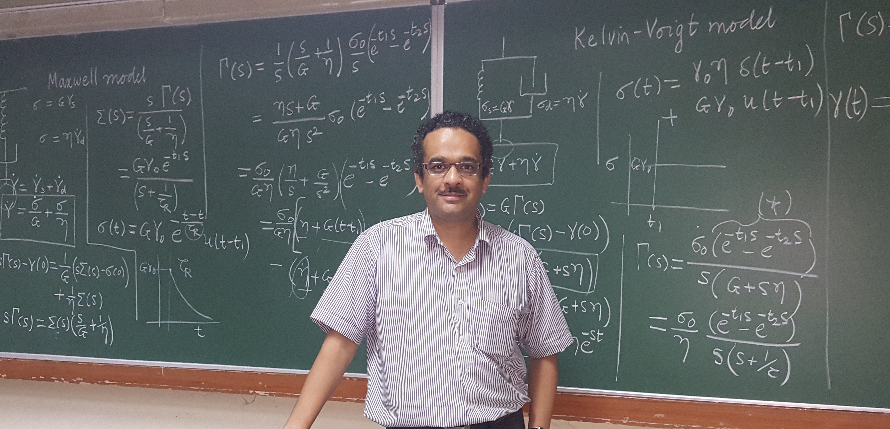

Prof. Yogesh M Joshi
FNA, FASc, FNASc, FNAE, FSoR (US), FRSC
J. C. Bose Fellow
Mr. and Mrs. Gian Singh Bindra Chair Professor
Senior Editor, Langmuir
B.E. University of Pune, 1996
Ph.D. IIT-Bombay, Mumbai; National Chemical Laboratory, Pune 2001
Post Doctoral Fellowship, Benjamin Levich Institute for Physico-Chemical Hydrodynamics, New York, 2001-2004

Group Overview
Our group is interested in understanding the physical behavior and dynamics of structured fluids. We combine expertise from Chemical Engineering, Physics, Chemistry, and Materials Science to understand molecular phenomena responsible for flow behavior. The major thrust area of our group is to understand ageing and the effect of deformation on a variety of soft glassy materials such as concentrated suspensions, glassy polymers, and polymer nanocomposites. A common theme in all these systems is their jammed state, wherein the primary entity (particle or molecular segment) is physically arrested due to the overall crowding of constituents.
Recently we showed how rheological characterization can give profound insight into the ageing of colloidal glasses compared to that of colloidal gels. We also investigated the effect of deformation on ageing suspensions and how its influence on relaxation dynamics can be used to predict long-time rheological behavior. Furthermore, we are involved in understanding the intriguing flow behaviors of discotic nematic suspensions, which are industrially very important.
Research Areas
- Colloidal Glasses & Gels
- Soft Matter
- Rheology of Complex Fluids
- Polymer Science & Engineering
📢 Group News
- [New] Welcome to our newly revamped group website! Stay tuned for more updates on our recent publications and research.